
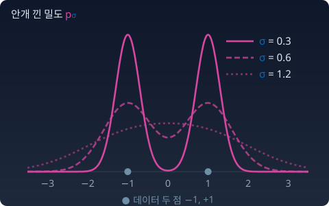

순방향 과정: 노이즈가 지형을 뭉갠다
레이더만 있으면 걸어갈 수 있다. 그런데 그 레이더를 누가 만들어 주는가? 우리 손에 있는 것은 이미지들, 곧 봉우리 위에 놓인 점들뿐이고 지형 p는 모른다. 노이즈에서 이미지로 가는 길을 알려면, 거꾸로 이미지가 노이즈가 되는 길부터 알아야 하지 않을까? 그 길은 우리가 직접 만들 수 있다. 이미지에 노이즈를 조금씩 더하기만 하면 된다. 그러면 분포는 어떻게 변할까? 뭉개진다. 이 뭉개짐을 거꾸로 되돌리는 것이 생성이다.

안개의 단계 — 노이즈 스케줄
대회는 새벽에 시작한다. 짙은 안개 속에서.
안개가 짙으면 레이더의 수신 범위가 넓어진다. 7개 볼의 신호가 뭉개져서 하나로 섞이고, 레이더는 어떤 볼인지 가리지 못한 채 "대충 저쪽"을 가리킨다. 해가 뜨면서 안개가 걷히면 수신 범위가 좁아진다. 가장 가까운 볼의 신호가 커지고, 레이더는 정밀해져서 특정 볼을 또렷하게 가리킨다. 멀리서는 숲을 보고, 가까이서는 나무를 본다. 안개를 얼마나 빨리 짙게 할지 시간표를 정한 것을 노이즈 스케줄이라고 부른다.
SDE로 쓰기 — 안개를 짙게 하기
순방향 과정 = 안개를 짙게 하는 것. 데이터 한 점 x₀에서 출발해, 매 순간 작은 무작위 발걸음을 더한다. 이것을 확률미분방정식(SDE, stochastic differential equation. 매 순간 무작위 항이 끼어드는 미분방정식)으로 쓴다.
시간 t의 방향을 먼저 적어 둔다. 이 장에서는 디퓨전 문헌의 관례를 따라 t = 0이 데이터, t가 커질수록 노이즈다. 문헌에 따라서는 방향이 반대(t = 0이 노이즈, t = 1이 데이터)인 경우도 있으니, 식을 옮겨 올 때 조심하자.
dW는 매 순간 더해지는 작은 무작위 걸음으로, 평균 0, 분산 dt인 가우시안이다. 가장 단순한 선택은 표류 없이(f = 0) 노이즈만 쌓는 것이다. 그러면 시간 t의 점은 xt = x₀ + σt z, z ~ N(0, I) 이고, σt² 는 그때까지 쌓인 g² 의 합이다. 표류 f = −½β(t)x 를 넣어 원점 쪽으로 줄이면서 노이즈를 더하는 DDPM(denoising diffusion probabilistic model, 잡음 제거 디퓨전 확률 모델. 호(Jonathan Ho) 외 2020) 방식도 같은 틀 안에 있다. β(그리스 문자 베타)(t)는 시각 t에 노이즈를 얼마나 빨리 넣는지 정하는 양수다.
점 하나가 아니라 분포 전체를 보자. x₀ ~ p 에 독립인 가우시안 노이즈를 더했으니, xt의 밀도는 p와 가우시안 커널의 합성곱이다. 커널은 점 하나를 번지게 하는 모양(여기서는 종 모양 가우시안)이고, 합성곱은 데이터의 점마다 그 종을 하나씩 씌워 모두 더하는 계산이다. 점이 있던 자리마다 잉크 방울이 번진 그림을 떠올리면 된다.

pt를 주변분포라고 부르는 것은, 원래 점 x₀가 무엇이었는지라는 조건을 모두 합쳐 버린 분포이기 때문이다. 드래곤볼 지형이면 계산이 간단하다. 가우시안과 가우시안의 합성곱은 가우시안이고, 분산이 더해진다. 폭 s₀였던 봉우리는 폭 √(s₀² + σt²)가 된다. 볼들 사이 간격보다 이 폭이 커지면 일곱 봉우리가 하나의 언덕으로 합쳐진다.
충분히 더하면 순수한 가우시안 — 완전한 안개. 분포를 넓게 섞는 쪽, 무지의 방향이다. 가능성이 넓어지고, 불확실성이 커진다.
불러오는 중…
트위디 공식 — 안개 속 레이더가 가리키는 곳
안개 낀 지형의 레이더 ∇log pt는 무엇을 가리킬까. 답이 놀랍도록 깔끔하다.
트위디 공식이다. 허버트 로빈스(Herbert Robbins)가 1956년 논문에서 모리스 트위디(Maurice Tweedie)와 주고받은 편지에 공을 돌리며 소개했고, 브래들리 에프론(Bradley Efron)이 2011년 논문 「Tweedie’s Formula and Selection Bias」로 다시 널리 알렸다. 안개 낀 점 x에서 스코어 방향으로 σt² 만큼 걸어가면, "안개가 걷혔을 때 볼이 있었을 법한 위치의 평균"에 닿는다. 레이더 바늘은 노이즈를 걷어낸 추정치를 가리키고 있다. (표류가 있는 DDPM식 xt = αtx₀ + σtz 이면 좌변이 αt E[x₀ | xt]로 바뀔 뿐이다.)
증명은 한 줄이다. pt(x) = ∫ p(x₀) N(x; x₀, σt²) dx₀ 를 x로 미분하면 가우시안 커널의 미분 −(x − x₀)/σt² 가 적분 안으로 들어오고, pt로 나누면 사후 평균 E[x₀ − x | x] / σt² 가 남는다.
매니폴드 가설과의 연결
안개가 완전히 걷힌 상태에서 참가자가 도달하는 곳 — 드래곤볼의 위치 — 이 데이터 매니폴드다. 안개 속에서는 매니폴드를 벗어나 있었지만, 걷는 과정이 매니폴드 위로 되돌려준다.
순방향 과정 = 매니폴드를 떠남 (노이즈 추가)
역방향 과정 = 매니폴드로 귀환 (스코어를 따라 걸음)
장 첫머리의 물음, 곧 넓은 공간 아무 데나 떨어진 점이 좁은 곳을 어떻게 찾아가는가에 대한 답의 모양이 이 두 줄이다. 남은 일은 역방향의 걸음을 실제로 적는 것이다.
파이썬
트위디 공식을 표본으로 확인해 보자. 데이터는 봉우리가 둘인 가장 단순한 분포, 곧 −1과 +1 두 점이 반반인 분포로 잡는다. 이 데이터에 안개를 더한 분포의 스코어는 (tanh(y/σ²) − y)/σ² 로 손으로 적힌다. 안개 낀 점 y 근처에 떨어진 표본만 모아 원래 점의 평균을 내고, 그 값을 트위디 공식과 견준다.
import numpy as np
rng = np.random.default_rng(0)
# 데이터: 두 점 ±1 (반반). 안개: x_σ = x + σ z
sigma, n = 0.5, 4_000_000
x = rng.choice([-1.0, 1.0], n)
xs = x + sigma * rng.normal(size=n)
def score(y): # p_σ = ½N(−1,σ²) + ½N(1,σ²) 의 스코어
return (np.tanh(y / sigma**2) - y) / sigma**2
for y in [0.3, 0.8, 1.5]:
near = np.abs(xs - y) < 0.01
print(f"y={y}: E[x|y] 표본 {x[near].mean():.3f} 트위디 y+σ²∇log p {y + sigma**2 * score(y):.3f}")
# y=0.3: E[x|y] 표본 0.832 트위디 y+σ²∇log p 0.834
# y=0.8: E[x|y] 표본 0.997 트위디 y+σ²∇log p 0.997
# y=1.5: E[x|y] 표본 1.000 트위디 y+σ²∇log p 1.000
안개 낀 점 0.3을 본 사람은 "원래 +1이었을 가능성이 크지만 확신은 못 한다"고 말한다. 그 망설임까지 담은 평균 0.83을 스코어 한 번으로 얻는다. 그렇다면 생성도 이것으로 끝나는 것 아닐까? 짙은 안개 속 노이즈에서 출발해, 트위디 공식이 알려 주는 평균 위치로 한 번에 뛰면 되지 않을까?
수확
“노이즈를 더하면 분포는 가우시안과 합성곱된다. 그 뭉개진 지형의 스코어는 '안개를 걷어낸 평균 위치’를 가리킨다.”
문제 4. 운이 섞인 시험 점수
어느 반 학생들의 실력(운이 섞이지 않은 점수)은 평균 70점, 표준편차 10점으로 퍼져 있다. 시험 점수는 실력에 운이 더해진 것이고, 운은 평균 0점, 표준편차 10점이며 실력과 무관하다. 한 학생이 시험에서 90점을 받았다. 이 학생의 실력을 하나의 숫자로 어림하면 얼마인가?
함께 풀기

90점이요. 시험이 실력을 재려고 보는 거니까 받은 점수가 제일 좋은 어림이죠.

이 반에서 90점을 받은 학생들만 모아 다음 시험을 보게 하면, 그 학생들의 평균은 또 90점 근처일까요?

아… 아닐 것 같아요. 90점을 받은 학생 중에는 실력이 80점인데 운이 좋았던 학생이 많을 거예요. 실력이 90점 넘는 학생은 원래 드무니까요.

실력의 분산이 100, 운의 분산도 100이라 점수의 흔들림은 반이 실력, 반이 운이에요. 그래서 평균 70에서 벗어난 20점 가운데 100/(100 + 100) = 절반만 실력으로 믿어요. 70 + 10 = 80점이에요.
점수에 섞인 운의 몫만큼 반 평균 쪽으로 당겨 어림하는 거예요. 운이 클수록 더 많이 당겨요.
확률론 수업에서 배운 「평균으로의 회귀」네요. 둘째 시험에서 1등 학생의 점수가 대개 내려오는 것도 같은 까닭이에요.
문제 5. 안개 낀 가우시안
데이터가 x₀ ~ N(0, 1)이고, 안개 σ = 2를 더해 x = x₀ + 2z를 관측했다. (가) 안개 낀 분포의 스코어를 구하라. (나) 트위디 공식으로 x = 3일 때 E[x₀ | x]를 구하고, 베이즈 정리로 직접 구한 값과 비교하라.
함께 풀기
데이터가 N(0, 1)이니까 스코어는 −x예요. 트위디에 넣으면 E[x₀ | x = 3] = 3 + 4 × (−3) = −9예요.
관측이 +3인데 원래 값의 평균이 −9라고요?
…그러네요. 데이터는 거의 [−3, 3] 안에 사는데 −9는 말이 안 돼요. 공식은 맞게 썼는데요.
나는 시뮬레이션으로 뽑아서 x가 3 근처인 것만 모아 x₀ 평균을 냈는데 0.60이 나왔어.
트위디 공식의 스코어는 어느 분포의 스코어였어요?

pt, 안개 낀 분포요. 저는 데이터 p₀의 스코어를 넣었어요. 안개 낀 분포는 N(0, 1)과 N(0, 4)의 합성곱이라 N(0, 5)예요. 스코어는 −x/5, x = 3에서 −0.6이에요. 그러면 3 + 4 × (−0.6) = 0.6이에요.
베이즈로 해도 사후평균은 1/(1 + 4) × 3 = 0.6이에요. 세 값이 다 맞아요.
시험 점수 문제에서 실력의 분산을 전체 분산으로 나눠 반 평균 쪽으로 당겼던 거랑 같은 계산이네. 여기선 실력 분산 1, 운 분산 4라서 3의 5분의 1만 믿는 거고.
분산이 더해진다는 것, 안개 위젯의 √(s₀² + σ²)와 같은 이야기예요.
확률론 수업에서 독립 합의 분산을 계산할 때는 절대 안 틀리는데, 기호가 pt로 바뀌니까 t를 떼어 먹었어요. 해석학에서 f와 f∘g의 도함수를 섞는 실수랑 같은 종류예요.
문제 6. 한 번에 뛰어 보기
이미지 디퓨전 모델은 안개 낀 이미지를 받아 「원래 이미지의 평균 위치」, 곧 트위디 공식의 E[x₀ | xt]를 내놓도록 학습할 수 있다. 그렇다면 짙은 안개 속 노이즈를 한 번만 넣어 이 평균으로 곧장 뛰면 이미지가 나올까? 데이터가 두 점 ±1(반반)인 장난감으로 확인한다. 이 데이터에서 E[x₀ | xσ = y] = tanh(y/σ²)이다. (가) 짙은 안개 σ = 2에서 y = 0.3에 선 점은 어디로 뛰는가? (나) 안개 낀 점을 모두 한 번에 뛰게 하면, 도착점 가운데 데이터 ±1 근처(거리 0.1 안)에 닿는 비율은 얼마인가? 옅은 안개 σ = 0.5이면?
함께 풀기
(가)는 tanh(0.3/4) = 0.075예요. 트위디 공식이 원래 점을 알려 주니까, 모델이 몇백 번씩 걷는 건 낭비 같은데요. 한 번이면 되잖아요.
0.075라는 점은 데이터에 있어요?
데이터는 −1이랑 +1뿐이에요. 0.075는 그 사이 빈 땅이고요.

(나)를 백만 개로 돌렸더니 σ = 2에서는 ±1 근처에 닿은 게 0.7%뿐이에요. 67%는 −0.5와 0.5 사이에 떨어졌어요. σ = 0.5에서는 90%가 닿아요.
트위디가 주는 건 평균이지 표본이 아니야. 짙은 안개에서는 어느 볼에서 왔는지 거의 모르니까, 두 볼을 반반 섞은 평균, 곧 한가운데를 내놓는 게 제곱 오차로는 최선이고. 옅은 안개에서는 볼이 거의 하나로 정해져서 평균이 곧 그 볼이 되는 거고.
이미지로 옮기면 무슨 일이 생길까요?
짙은 노이즈에서 한 번에 뛰면 고양이 여러 마리를 겹쳐 평균 낸 흐릿한 그림이 나오겠네요. 그래서 안개를 조금 걷고, 그 안개에 맞는 평균 쪽으로 조금 걷고, 다시 조금 걷고… 여러 걸음으로 나누는 거구나. 볼이 정해질 때까지는 평균 쪽으로 조금씩만 가야 해요.
그 「조금씩」을 정확히 적은 식이 무엇인지, 이제 찾아볼 차례예요.